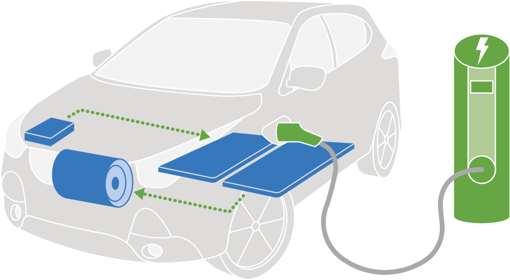
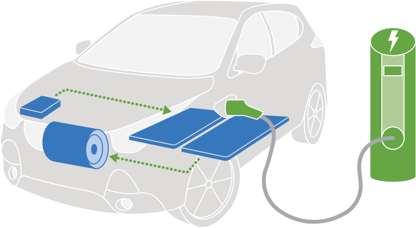

Electric Cars
- An electric car or electric vehicle (EV) is a passenger automobile that is propelled by an electric
traction motor,
using electrical energy as the primary source of propulsion
The term normally refers to a plug-in electric vehicle, typically a battery electric vehicle (BEV),
which only uses energy stored in on-board battery packs, but broadly may also include plug-in hybrid electric vehicle (PHEV), range-extended electric vehicle (REEV) and fuel cell electric vehicle (FCEV),
which can convert electric power from other fuels via a generator or a fuel cell.
 
Read more

Read more
Models
-
tesla
- Almost on its own, Tesla has proven that electric vehicles can be desirable, combining outstanding
performance and high-tech interiors with usable driving range
The Model X crossover has room for up to seven. It’s also the most expensive Tesla, featuring the unique Falcon Wing doors.
You have your pick of two sedans: the larger, more expensive Model S is a hot rod.
The smaller, less pricey Model 3 Performance isn’t far behind. The company has also revealed its wildly styled pickup truck, the Cybertruck. -
Maserati GranTurismo Folgore
-
BMW i7
- Maserati reinvents itself for the electric age… with a car that doesn’t look too different from the old
one.
A bonkers V6 lives on, though

 Read more
Read more
- BMWs have always relied on their mostly great engines for the soul and sensation we all crave, as well
as their dynamics,
but the focus is shifting elsewhere now.
The new 7 Series has arguably the finest interior in the automotive world, beautifully executed, well-made and imaginative.
You can argue among yourselves about the exterior design, but inside is a knock-out.

 Read more
Read more
- Electric cars have numerous advantages over traditional internal combustion engine (ICE) vehicles, both for individual drivers and society at large. Here are some key benefits:
Electric Cars Advantages
- Environmental Benefits
- Reduced Emissions: Electric vehicles (EVs) produce zero tailpipe emissions, which can help reduce
air pollution and greenhouse gases,
especially if the electricity used is generated from renewable sources. - Lower Carbon Footprint: When powered by clean energy, electric cars significantly reduce carbon
emissions compared to gasoline vehicles,
contributing to climate change mitigation. - Less Noise Pollution: EVs are quieter than traditional cars, leading to reduced noise pollution, especially in urban areas.
- Lower Operating Costs
- Cheaper Fuel: Electricity is generally less expensive than gasoline on a per-mile basis, making EVs cheaper to "fuel" over time.
- Lower Maintenance Costs: Electric cars have fewer moving parts than ICE vehicles,
leading to lower maintenance and repair costs (no oil changes, fewer parts to replace, etc.). - Incentives and Tax Breaks: Many governments offer tax credits, rebates, and other incentives for
purchasing EVs,
which can reduce the initial purchase cost. - Energy Efficiency
- Higher Efficiency: Electric motors are more energy-efficient than internal combustion engines,
converting more of the energy stored in batteries to power the wheels. - Regenerative Braking: Most EVs are equipped with regenerative braking systems,
which capture and reuse energy during braking, further improving efficiency.